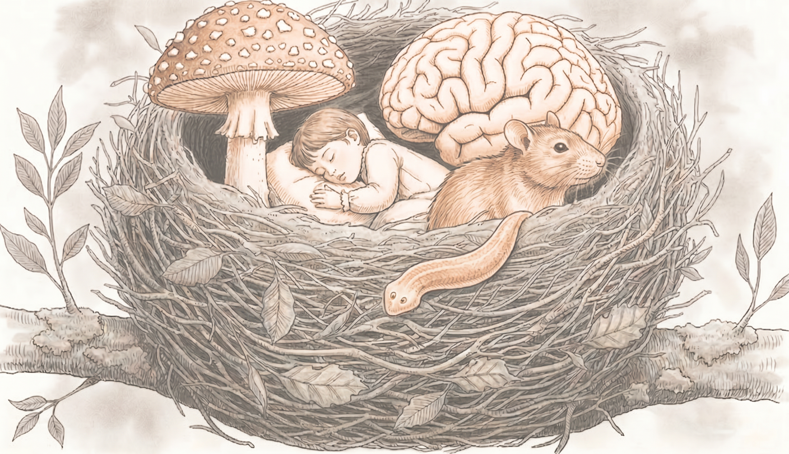

Other Research

The research with the NEST is very broad and some of it straddles between different areas (such as the effects of psychedelics on planaria neurogenesis) while other research does not fall neatly into one of the four areas.
Our ongoing and exploratory projects include:
- Tobacco Addiction: One of the projects within our group is focused on understanding why tobacco addiction is more than just nicotine addiction. In previous research with our colleagues, we have identified six different compounds in tobacco that block monoamine oxidase. In our current experiments, we are developing an inhalation self-administration technique in rats that will allow us to investigate whether these compounds enhance the reinforcing properties of nicotine.
- Metabolism and Cell Growth Signalling: In another project, we are investigating the role of impaired metabolism and cell growth signalling cascades in mental disorders such as schizophrenia, bipolar disorders, and schizotypy. While this project is still in an early stage, we will be using existing data, from for example the UK Biobank, and in addition we may collect data from planaria or other model systems as well.
- Prefrontal Cortex and Neuropathic Pain: In another project, we are investigating the role of the prefrontal cortex in neuropathic pain. For this we make use of a new technology we recently obtained: functional Near Infrared Spectroscopy (fNIRS). Like functional Magnetic Resonance Imaging (fMRI), fNIRS measures local blood flow, which can be seen as a measure of local brain activity.
- Self-Medication and Performance Anxiety: A further project focuses on understanding self-medication and anxiety, especially stage fright in performers. We are investigating whether self-medication with, for example, alcohol or beta-blockers, are simply tools to reduce anxiety, or whether they can actually induce other effects as well, such as increasing creativity.